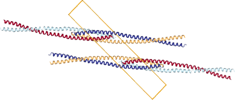
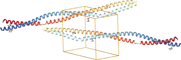

Molecular models¶
In this section we show how to handle structural models of biomolecules (to some degree, it also applies to small molecules and inorganic structures).
Models from a single file (PDB, mmCIF, etc.) are stored in the Structure
class, with the usual Model-Chain-Residue-Atom hierarchy.
Gemmi provides basic functions to access and manipulate the structure,
and on top of it more complex functions, such as
neighbor search, calculation of dihedral angles, removal of ligands from
a model, etc.
Comparing with tools rooted in bioinformatics:
Gemmi focuses more on working with incomplete models (on all stages before they are published and submitted to the PDB),
and Gemmi is aware of the neighbouring molecules that are implied by the crystallographic and non-crystallographic symmetry.
Elements¶
When working with molecular structures it is good to have basic data from the periodic table at hand.
C++
#include <gemmi/elem.hpp>
gemmi::Element el("Mg");
int its_number = el.atomic_number();
double its_weight = el.weight();
const char* its_name = el.name();
Python
>>> import gemmi
>>> gemmi.Element('Mg').weight
24.305
>>> gemmi.Element(118).name
'Og'
>>> gemmi.Element('Mo').atomic_number
42
We also included covalent radii of elements from a Wikipedia page, which has data from Cordero et al (2008), Covalent radii revisited, Dalton Trans. 21, 2832.
>>> gemmi.Element('Zr').covalent_r
1.75
and a flag for metals (the classification is somewhat arbitrary):
>>> gemmi.Element('Mg').is_metal
True
>>> gemmi.Element('C').is_metal
False
Small Molecules¶
CIF files that describe small-molecule and inorganic structures
can be read into an SmallStructure object.
Unlike macromolecular Structure, SmallStructure has no hierarchy.
It is just a flat list of atomic sites (SmallStructure::Site)
together with the unit cell and symmetry.
#include <cassert>
#include <gemmi/cif.hpp>
#include <gemmi/smcif.hpp>
int main() {
auto block = gemmi::cif::read_file("1011031.cif").sole_block();
gemmi::SmallStructure SiC = gemmi::make_small_structure_from_block(block);
assert(SiC.cell.a == 4.358);
assert(SiC.spacegroup_hm == "F -4 3 m");
assert(SiC.sites.size() == 2);
assert(SiC.get_all_unit_cell_sites().size() == 8);
}
>>> import gemmi
>>> SiC = gemmi.read_small_structure('../tests/1011031.cif')
>>> SiC.cell.a
4.358
>>> SiC.spacegroup_hm
'F -4 3 m'
>>> SiC.sites
[<gemmi.SmallStructure.Site Si1>, <gemmi.SmallStructure.Site C1>]
>>> len(SiC.get_all_unit_cell_sites())
8
>>> site = SiC.sites[0]
>>> site.label
'Si1'
>>> site.type_symbol
'Si4+'
>>> site.fract
<gemmi.Fractional(0, 0, 0)>
>>> site.occ
1.0
>>> site.u_iso # not specified here
0.0
>>> site.element # obtained from type_symbol 'Si4+'
<gemmi.Element: Si>
>>> site.charge # obtained from type_symbol 'Si4+'
4
We will need another cif file to show anisotropic ADPs and disorder_group:
>>> perovskite = gemmi.read_small_structure('../tests/4003024.cif')
>>> for site in perovskite.sites:
... print(site.label, site.aniso.nonzero(), site.disorder_group or 'n/a')
Cs1 True n/a
Sn2 False 1
Cl1 True n/a
In False 2
>>> perovskite.sites[2].aniso.u11
0.10300000000000001
>>> perovskite.sites[2].aniso.u22
0.15600000000000003
>>> perovskite.sites[2].aniso.u33
0.15600000000000003
>>> perovskite.sites[2].aniso.u12
0.0
>>> perovskite.sites[2].aniso.u13
0.0
>>> perovskite.sites[2].aniso.u23
0.0
Chemical Components¶
Residues (monomers) and small molecule components of macromolecular models are called chemical components. Gemmi can use three sources of knowledge about chemical components:
built-in basic data about 350+ popular components,
the Chemical Component Dictionary (CCD) maintained by the PDB (25,000+ components),
so-called CIF files compatible with the format of the Refmac/CCP4 monomer library.
Built-in data¶
The built-in data is accessed through the function find_tabulated_residue.
It contains only minimal information about each residue:
assigned category, the “standard” flag (non-standard residues are marked
as HETATM in the PDB, even in polymer), one-letter code,
the number of hydrogens and molecular weight:
#include <gemmi/resinfo.hpp>
gemmi::ResidueInfo info = gemmi::find_tabulated_residue("ALA");
bool is_it_aminoacid = info.is_amino_acid();
int approximate_number_of_h_atoms = info.hydrogen_count;
>>> gln = gemmi.find_tabulated_residue('GLN')
>>> gln.is_amino_acid()
True
>>> gln.one_letter_code
'Q'
>>> round(gln.weight, 3)
146.144
>>> gln.hydrogen_count
10
>>> gemmi.find_tabulated_residue('DOD').is_water()
True
>>> # PDB marks "non-standard" residues as HETATM.
>>> # Pyrrolysine is standard - some microbes have it.
>>> gemmi.find_tabulated_residue('PYL').is_standard()
True
>>> gemmi.find_tabulated_residue('MSE').is_standard()
False
CCD and monomer libraries¶
To get more complete information, including atoms and bonds in the monomer, we need to first read either the CCD or a monomer library.
The CCD components.cif file describes all the monomers
(residues, ligands, solvent molecules) from the PDB entries.
Importantly, it contains information about bonds.
Note
The absence of bond information in mmCIF files from wwPDB is a well-known problem, mitigated somewhat by PDBe which in parallel to the wwPDB archive has also mmCIF files with connectivity and bond-order information; and by RCSB which has this information in the MMTF format.
Macromolecular refinement programs need to know more about monomers than the CCD can tell: they need to know how to restrain the structure. Therefore, they have own dictionaries of monomers (a.k.a monomer libraries), such as the Refmac dictionary, where each monomer is described by one cif file. These libraries are often complemented by user’s own cif files.
Gemmi has class ChemComp that corresponds to the data about a monomer
from either the CCD or a cif file.
#include <gemmi/cif.hpp> // for cif::read_file
#include <gemmi/chemcomp.hpp> // for ChemComp, make_chemcomp_from_block
gemmi::ChemComp make_chemcomp(const char* path) {
gemmi::cif::Document doc = gemmi::cif::read_file(path);
// assuming the component description is in the last block of the file
return gemmi::make_chemcomp_from_block(doc.blocks.back());
}
>>> # SO3.cif -> gemmi.ChemComp
>>> block = gemmi.cif.read('../tests/SO3.cif')[-1]
>>> so3 = gemmi.make_chemcomp_from_block(block)
It also has class MonLib that corresponds to a monomer library.
In addition to storing a mapping between residue names and ChemComps,
it also stores information that in the CCP4 monomer library is kept in
mon_lib_list.cif: description of chemical links and modifications,
and classification of the residues.
These classes are not documented yet.
The examples in Graph analysis
show how to access the lists of atoms and bonds from ChemComp.
Coordinates and matrices¶
Coordinates are represented by two classes:
Positionfor coordinates in Angstroms (orthogonal coordinates),Fractionalfor coordinates relative to the unit cell (fractional coordinates).
Both Position and Fractional are derived from Vec3,
which has three numeric properties: x, y and z.
>>> v = gemmi.Vec3(1.2, 3.4, 5.6)
>>> v.y = -v.y
>>> # it can also be indexed
>>> v[1]
-3.4
The only reason to have separate types is to prevent functions that
expect fractional coordinates from accepting orthogonal ones, and vice versa.
In C++ these types are defined in gemmi/math.hpp.
If you have points in space you may want to calculate distances, angles and dihedral angles:
>>> from math import degrees
>>> p1 = gemmi.Position(0, 0, 0)
>>> p2 = gemmi.Position(0, 0, 1)
>>> p3 = gemmi.Position(0, 1, 0)
>>> p4 = gemmi.Position(-1, 1, 0)
>>> p1.dist(p2)
1.0
>>> degrees(gemmi.calculate_angle(p1, p2, p3))
45.00000000000001
>>> degrees(gemmi.calculate_dihedral(p1, p2, p3, p4))
90.0
Additionally, in C++ you have other functions.
See headers gemmi/math.hpp and gemmi/calculate.hpp.
Working with macromolecular coordinates involves 3D transformations, such as crystallographic and non-crystallographic symmetry operations, and fractionalization and orthogonalization of coordinates. This requires a tiny bit of linear algebra.
3D transformations tend to be represented either by a 4x4 matrix,
or by a 3x3 matrix and a translation vector. Gemmi uses the latter.
Transformations are represented by the Transform class
that has two member variables:
mat (of type Mat33) and vec (of type Vec3, which was
introduced above).
>>> tr = gemmi.Transform() # identity
>>> tr.mat
<gemmi.Mat33 [1, 0, 0]
[0, 1, 0]
[0, 0, 1]>
>>> tr.vec
<gemmi.Vec3(0, 0, 0)>
Both Vec3 and Mat33 can be converted to and from Python’s list:
In case of Mat33 it is a nested list:
>>> tr.vec.fromlist([3.0, 4.5, 5])
>>> tr.vec.tolist()
[3.0, 4.5, 5.0]
>>> # nested listed for Mat33
>>> m = tr.mat.tolist()
>>> m
[[1.0, 0.0, 0.0], [0.0, 1.0, 0.0], [0.0, 0.0, 1.0]]
>>> m[1][2] = -5
>>> tr.mat.fromlist(m)
>>> tr.mat
<gemmi.Mat33 [1, 0, 0]
[0, 1, -5]
[0, 0, 1]>
Here is an example that shows a few other properties:
>>> # get NCS transformation from an example pdb file
>>> ncs_op = gemmi.read_structure('../tests/1lzh.pdb.gz').ncs[0].tr
>>> type(ncs_op)
<class 'gemmi.Transform'>
>>> ncs_op.mat
<gemmi.Mat33 [0.97571, -0.2076, 0.06998]
[0.2156, 0.96659, -0.13867]
[-0.03885, 0.15039, 0.98786]>
>>> _.determinant()
1.000003887799667
>>> ncs_op.vec
<gemmi.Vec3(-14.1959, 0.72997, -30.5229)>
>>> # is the 3x3 matrix above orthogonal?
>>> mat = ncs_op.mat
>>> identity = gemmi.Mat33()
>>> mat.multiply(mat.transpose()).approx(identity, epsilon=1e-5)
True
>>> ncs_op.apply(gemmi.Vec3(20, 30, 40))
<gemmi.Vec3(1.8895, 28.4929, 12.7262)>
>>> ncs_op.inverse().apply(_)
<gemmi.Vec3(20, 30, 40)>
To avoid mixing of orthogonal and fractional coordinates
Gemmi also has FTransform, which is like Transform,
but can be applied only to Fractional coordinates.
We have special classes for symmetric 3x3 matrices: SMat33f and SMat33d
(for 32- and 64-bit floating point numbers, respectively).
These classes are used primarily for anisotropic ADP tensors;
their member variables are named u11, u22, u33,
u12, u13 and u23. SMat33 classes provide a few methods,
including calculations of eigenvalues and eigenvectors.
>>> aniso = perovskite.sites[2].aniso
>>> aniso.u11
0.10300000000000001
>>> aniso.trace()
0.41500000000000004
>>> aniso.determinant()
0.002506608000000001
>>> aniso.calculate_eigenvalues()
[0.10300000000000001, 0.15600000000000003, 0.15600000000000003]
In C++ all these types are defined in gemmi/math.hpp.
Unit Cell¶
When working with a structural model in a crystal we need to know
the unit cell. In particular, we need to be able to switch between
orthogonal and fractional coordinates.
Here are the most important properties and methods of the UnitCell class:
C++
#include <gemmi/unitcell.hpp>
// UnitCell has:
// * directly set properties a, b, c, alpha, beta, gamma,
// * calculated properties such as ar (a*), br (b*), ..., volume,
// * fractionalization and orthogonalization matrices,
// * a list of images (symmetry or NCS mates) that is set externally
// when reading a file.
// * and a few functions such as orthogonalize(), fractionalize(),
// is_special_position(), find_nearest_image().
gemmi::UnitCell cell(25.14, 39.50, 45.07, 90, 90, 90);
gemmi::Position p = cell.orthogonalize(gemmi::Fractional(0.5, 0.5, 0.5));
Python
>>> cell = gemmi.UnitCell(25.14, 39.50, 45.07, 90, 90, 90)
>>> cell
<gemmi.UnitCell(25.14, 39.5, 45.07, 90, 90, 90)>
>>> cell.a, cell.b, cell.c
(25.14, 39.5, 45.07)
>>> cell.alpha, cell.beta, cell.gamma
(90.0, 90.0, 90.0)
>>> cell.volume
44755.8621
>>> cell.fractionalize(gemmi.Position(10, 10, 10))
<gemmi.Fractional(0.397772, 0.253165, 0.221877)>
>>> cell.orthogonalize(gemmi.Fractional(0.5, 0.5, 0.5))
<gemmi.Position(12.57, 19.75, 22.535)>
The UnitCell object can also store a list of symmetry transformations. This list is populated automatically when reading a coordinate file. It contains crystallographic symmetry operations. In rare cases when the file defines strict NCS operarations that are not “given” (MTRIX record in the PDB format or _struct_ncs_oper in mmCIF) the list contains also the NCS operations. With this list we can use:
UnitCell::volume_per_image() -> double– returnsUnitCell::volumedivided by the number of the molecule images in the unit cell,>>> st = gemmi.read_structure('../tests/1pfe.cif.gz') >>> st.spacegroup_hm 'P 63 2 2' >>> st.cell.volume / st.cell.volume_per_image() 12.0
UnitCell::is_special_position(const Position& pos, double max_dist=0.8) -> int– returns the number of nearby symmetry mates of an atom. Non-zero only for atoms on special positions. For example, returns 3 for an atom on 4-fold symmetry axis.>>> # chloride ion in 1PFE is significantly off the special position >>> cl = st[0].sole_residue('A', gemmi.SeqId('20'))[0] >>> cl <gemmi.Atom CL at (-0.3, 23.0, -19.6)> >>> round(1.0 / cl.occ) 6 >>> st.cell.is_special_position(cl.pos, max_dist=0.5) 0 >>> st.cell.is_special_position(cl.pos, max_dist=0.8) 3 >>> st.cell.is_special_position(cl.pos, max_dist=1.2) 5
UnitCell::find_nearest_image(const Position& ref, const Position& pos, Asu asu) -> SymImage– with the last argument set toAsu::Any, it returns the symmetric image ofposthat is nearest toref. The last argument can also be set toAsu::SameorAsu::Different.
In the reciprocal space, the unit cell can be used to determine interplanar spacing dhkl (the resolution corresponding to reflection):
>>> cell.calculate_d([0, 1, 0])
39.5
Computationally, d is calculated from 1/d2, so if you need the latter you can calculate it directly:
>>> cell.calculate_1_d2([8, -9, 10])
0.20240687828293985
Reading coordinate files¶
Gemmi support the following coordinate file formats:
mmCIF (PDBx/mmCIF),
PDB (with popular extensions),
mmJSON,
a binary format (MMTF, binary CIF, or own format) is to be considered.
In this section we show how to read a coordinate file in Gemmi. In the next sections we will go into details of the individual formats. Finally, we will show what can be done with a structural model.
C++¶
All the macromolecular coordinate files supported by Gemmi can be opened using:
Structure read_structure_file(const std::string& path, CoorFormat format=CoorFormat::Unknown)
// where CoorFormat is defined as
enum class CoorFormat { Unknown, Pdb, Mmcif, Mmjson };
For example:
#include <gemmi/mmread.hpp>
// ...
gemmi::Structure st = gemmi::read_structure_file(path);
std::cout << "This file has " << st.models.size() << " models.\n";
In this example the file format is not specified and is determined from the file extension.
gemmi::Structure is defined in gemmi/model.hpp and
it will be documented later on.
Gemmi also has a templated function read_structure that you can use
to customize how you provide the data (bytes) to the parsers.
This function is used to uncompress gzipped files on the fly:
#include <iostream>
#include <gemmi/mmread.hpp>
#include <gemmi/gz.hpp>
int main(int argc, char** argv) {
for (int i = 1; i < argc; ++i)
try {
auto st = gemmi::read_structure(gemmi::MaybeGzipped(argv[i]));
std::cout << "This file has " << st.models.size() << " models.\n";
} catch (std::runtime_error& e) {
std::cout << "Oops. " << e.what() << std::endl;
}
}
If you include the gz.hpp header (as in the example above)
the resulting program must be linked with the zlib library.
$ c++ -std=c++11 -Iinclude example_above.cpp -lz
$ ./a.out 2cco.cif.gz
This file has 20 models.
The gemmi/mmread.hpp header includes many other headers
and is relatively slow to compile. For this reason, consider including it in
only one compilation unit (that does not change often).
Alternatively, if you want to support gzipped files,
use function gemmi::read_structure_gz() declared in the header
gemmi/gzread.hpp and implemented in gemmi/gzread_impl.hpp.
The latter header must be included in only one compilation unit.
If you know the format of files that you will read, you may also
use a function specific to this format. For example, the next section
shows how to read just a PDB file (read_pdb_file(path)).
Python¶
Any of the macromolecular coordinate files supported by Gemmi (gzipped or not) can be opened using:
>>> gemmi.read_structure(path)
<gemmi.Structure ...>
If the file format is not specified (example above) it is determined from the file extension. If the extension is not canonical you can specify the format explicitely:
>>> gemmi.read_structure(path, format=gemmi.CoorFormat.Pdb)
<gemmi.Structure ...>
The file form
gemmi.Structure will be documented later on.
PDB format¶
The PDB format evolved between 1970’s and 2012. Nowadays the PDB organization uses PDBx/mmCIF as the primary format and the legacy PDB format is frozen.
Note
The PDB format specification aims to describe the format of files
generated by the wwPDB. It does not aim to specify a format that can
be used for data exchange between third-party programs.
Following literally the specification is neither useful nor possible.
For example: the REVDAT record is mandatory, but using it makes sense
only for the entries released by the PDB.
Therefore no software generates files conforming to the specification
except from the wwPDB software (and even this one is not strictly
conforming: it writes 1555 in the LINK record for the identity operator
while the specifications requires leaving these fields blank).
Do not read too much into the specification.
Gemmi aims to support all flavours of PDB files that are in common use in the field of macromolecular crystallography. This includes files from wwPDB as well as files outputted by mainstream software.
In particular, we support the following extensions:
two-character chain IDs (columns 21 and 22),
segment ID (columns 73-76) from PDB v2,
hybrid-36 encoding of sequence IDs for sequences longer than 9999 (although we are yet to find an examples for this),
hybrid-36 encoding of serial numbers for more than 99,999 atoms.
Gemmi interprets more PDB records than most of programs and libraries, but supporting all the records is not a goal. The records that are interpreted can be converted from/to mmCIF:
HEADER
TITLE
KEYWDS
EXPDTA
NUMMDL
REMARK 2
REMARK 3 (read-only, i.e. only in PDB -> mmCIF conversion)
REMARK 200/230/240 (read-only)
REMARK 290 (partly-read, but not by default)
REMARK 300 (read-only)
REMARK 350
DBREF/DBREF1/DBREF2
SEQRES
HELIX
SHEET
SSBOND
LINK
CISPEP
CRYST1
ORIGXn
SCALEn
MTRIXn
MODEL/ENDMDL
ATOM/HETATM
ANISOU
TER
END
Although the PDB format is widely used, some of its features can be easily overlooked. The rest of this section describes such features. It is for people who are interested in the details of the PDB format. You do not need to read it if you just want to use Gemmi and work with molecular models.
Let us start with the the list of atoms:
HETATM 8 CE MSE A 1 8.081 3.884 27.398 1.00 35.65 C
ATOM 9 N GLU A 2 2.464 5.718 24.671 1.00 14.40 N
ATOM 10 CA GLU A 2 1.798 5.810 23.368 1.00 13.26 C
Standard residues of protein, DNA or RNA are marked as ATOM. Solvent, ligands, metals, carbohydrates and everything else is marked as HETATM. What about non-standard residues of protein, DNA or RNA? According to the wwPDB they are HETATM, but some programs and crystallographers prefer to mark them as ATOM. It is better to not rely on any of the two conventions. In particular, removing ligands and solvent cannot be done by removing all the HETATM records.
The next field after ATOM/HETATM is the serial number of an atom. The wwPDB spec limits the serial numbers to the range 1–99,999, but the popular extension called hybrid-36 allows to have more atoms in the file by using also letters in this field. If you do not need to interpret the CONECT records the serial number can be simply ignored.
Columns 13-27 describe the atom’s place in the hierarchy. In the example above they are:
1 2
345678901234567
CE MSE A 1
N GLU A 2
CA GLU A 2
Here the CE atom is in chain A, in residue MSE with sequence ID 1.
The atom names (columns 13-16) starts with the element name, and as a rule columns 13-14 contain only the element name. Therefore Cα and calcium ion, both named CA, are aligned differently:
1 2
345678901234567
CA GLU A 2
CA CA A 101
This rule has an exception: when the atom name has four characters it starts in column 13 even if it has a one-letter element code:
HETATM 6495 CAX R58 A 502 17.143 -29.934 7.180 1.00 58.54 C
HETATM 6496 CAX3 R58 A 502 16.438 -31.175 6.663 1.00 57.68 C
Columns 23-27 contain a sequence ID. It consists of a number (columns 23-26) and, optionally, also an insertion code (A-Z) in column 27:
ATOM 11918 CZ PHE D 100 -6.852 76.356 -23.289 1.00107.94 C
ATOM 11919 N ARG D 100A -9.676 74.726 -19.958 1.00105.71 N
...
ATOM 11970 CE MET D 100H -8.264 83.348 -19.494 1.00107.93 C
ATOM 11971 N ASP D 101 -11.329 81.237 -14.804 1.00107.41 N
The insertion codes are the opposite of gaps in the numbering; both are used to make the numbering consistent with a reference sequence (and for the same reason the sequence number can be negative).
Another fields that is blank for most of the atoms is altloc. It is a letter marking an alternative conformation (columns 17, just before the residue name):
HETATM 557 O AHOH A 301 13.464 41.125 8.469 0.50 20.23 O
HETATM 558 O BHOH A 301 12.554 42.700 8.853 0.50 26.40 O
Handling alternative conformations adds a lot of complexity, as it will be described later on in this documentation. These were all tricky things in the atom list.
Now let’s go to matrices. In most of the PDB entries the CRYST1 record is all that is needed to construct the crystal structure. But in some PDB files we need to take into account two other records:
MTRIX – if marked as not-given it defines operations needed to reconstruct the asymmetric unit,
SCALE – provides fractionalization matrix. The format of this entry is unfortunate: for large unit cells the relative precision of numbers is too small. So if coordinates are given in standard settings it is better to calculate the fractionalization matrix from the unit cell dimensions (i.e. from the CRYST1 record). But the SCALE record needs to be checked to see if the settings are the standard ones.
Reading¶
C++
As described in the previous section, all coordinate files can be read using the same function calls. Additionally, in C++, you may read a selected file format to avoid linking with the code you do not use:
#include <gemmi/pdb.hpp> // to read
#include <gemmi/gz.hpp> // to uncompress on the fly
gemmi::Structure st1 = gemmi::read_pdb_file(path);
// or
gemmi::Structure st2 = gemmi::read_pdb(gemmi::MaybeGzipped(path));
The content of the file can also be read from a string or from memory:
Structure read_pdb_string(const std::string& str, const std::string& name);
Structure read_pdb_from_memory(const char* data, size_t size, const std::string& name);
Python
import gemmi
# just use interface common for all file formats
structure = gemmi.read_structure(path)
# or a function that reads only pdb files
structure = gemmi.read_pdb(path)
# if you have the content of the PDB file in a string:
structure = gemmi.read_pdb_string(string)
Not all the metadata read from a PDB file is directly accessible from Python. Experimental details, refinement statistics, the secondary structure information, and many other things can be only read indirectly, by first putting it into a cif.Block:
>>> st = gemmi.read_structure('../tests/5moo_header.pdb')
>>> block = st.make_mmcif_headers()
>>> block.get_mmcif_category('_diffrn')
{'id': ['1', '2'], 'crystal_id': ['1', '2'], 'ambient_temp': ['295', '295']}
>>> block.get_mmcif_category('_diffrn_radiation')
{'diffrn_id': ['1', '2'], 'pdbx_scattering_type': ['x-ray', 'neutron'], 'pdbx_monochromatic_or_laue_m_l': ['M', None], 'monochromator': [None, None]}
PDB files are expected to have 80 columns, although trailing spaces are often not included. Some programs in certain situations produce longer lines, so Gemmi reads lines up to 120 characters. In some old files from the wwPDB snapshots columns 73-80 contain PDB ID and line number (such as “1ABC 205”). It confuses the PDB parser and it is not handled automatically – such files are not in use nowadays. Nevertheless, they can be read by manually limiting the line length:
>>> gemmi.read_pdb('../tests/pdb1gdr.ent', max_line_length=72)
<gemmi.Structure pdb1gdr.ent with 1 model(s)>
Writing¶
C++
Function for writing data from Structure to a pdb file are
in a header gemmi/to_pdb.hpp:
void write_pdb(const Structure& st, std::ostream& os,
PdbWriteOptions opt=PdbWriteOptions());
void write_minimal_pdb(const Structure& st, std::ostream& os);
std::string make_pdb_headers(const Structure& st);
Internally, these functions use the stb_sprintf library. And like in stb-style libraries, the implementation of the functions above is guarded by a macro. In exactly one file you need to add:
#define GEMMI_WRITE_IMPLEMENTATION
#include <gemmi/to_pdb.hpp>
Python
To output a file or string in the PDB format use one of the functions:
# To write full PDB use (the options are listed below):
structure.write_pdb(path [, options])
# To write only CRYST1 and coordinates, use:
structure.write_minimal_pdb(path)
# To get the same as a string:
pdb_string = structure.make_minimal_pdb()
# To get PDB headers as a string:
header_string = structure.make_pdb_headers()
write_pdb() has options to suppress writing of various records,
to avoid assigning a serial number to the TER record,
and to add use non-standard Refmac LINKR record instead of LINK.
Here is the full signature:
>>> print(gemmi.Structure.write_pdb.__doc__.replace(',', ',\n '))
write_pdb(self: gemmi.Structure,
path: str,
seqres_records: bool = True,
ssbond_records: bool = True,
link_records: bool = True,
cispep_records: bool = True,
ter_records: bool = True,
numbered_ter: bool = True,
use_linkr: bool = False) -> None
PDBx/mmCIF format¶
The mmCIF format (more formally: PDBx/mmCIF) became the primary format used by the wwPDB. The format uses the CIF 1.1 syntax with semantics described by the PDBx/mmCIF DDL2 dictionary.
While this section may clarify a few things, you do not need to read it to work with mmCIF files.
The main characteristics of the CIF syntax are described in the CIF introduction. Here we focus on things specific to mmCIF:
PDBx/mmCIF dictionary is clearly inspired by relational databases. Categories correspond to tables. Data items correspond to columns. Key data items correspond to primary (or composite) keys in RDBMS.
While a single block in a single file always describes a single PDB entry, some relations between tables seem to be designed for any number of entries in one block. For example, although a file has only one
_entry.idand_struct.title, the dictionary uses an extra item called_struct.entry_idto match the title with id. Is it a good practice to check_struct.entry_idbefore reading_struct.title? Probably not, as I have seen files with missing_struct.entry_idbut never (yet) with multiple_struct.title.Any category (RDBMS table) can be written as a CIF loop (table). If such a table would have a single row it can be (and always is in wwPDB) written as key-value pairs. So when accessing a value it is safer to use abstraction that hides the difference between a loop and a key-value pair (
cif::Tablein Gemmi).Arguably, the mmCIF format is harder to parse than the old PDB format. Using
grepandawkto extract atoms will work only with files written in a specific layout, usually by a particular software. It is unfortunate that the wwPDB FAQ encourages it, so one may expect portability problems when using mmCIF.The atoms (
_atom_site) table has four “author defined alternatives” (.auth_*) that have similar meaning to the “primary” identifiers (.label_*). Two of them, atom name (atom_id) and residue name (comp_id) almost never differ. The other two, chain name (asym_id) and sequence number (seq_id) may differ in a confusing way (A,B,C <-> C,A,B). Which one is presented to the user depends on a program (usually the author’s version). This may lead to funny situations.There is a formal distinction between mmCIF and PDBx/mmCIF dictionaries (they are controlled by separate committees). The latter is built upon the former. So we have the
pdbx_prefix in otherwise random places, to mark tags that are not in the vanilla mmCIF.
Here are example lines from a PDB file (3B9F) with the fields numbered at the bottom:
ATOM 1033 OE2 GLU H 77 -9.804 19.834 -55.805 1.00 25.54 O
ATOM 1034 N AARG H 77A -4.657 24.646 -55.236 0.11 20.46 N
ATOM 1035 N BARG H 77A -4.641 24.646 -55.195 0.82 22.07 N
| | | | | | | | | | | | | | |
1 2 3 4 5 6 7 8 9 10 11 12 13 14 15
and the corresponding lines from PDBx/mmCIF v5 (as served by the PDB in 2018):
ATOM 1032 O OE2 . GLU B 2 72 ? -9.804 19.834 -55.805 1.00 25.54 ? 77 GLU H OE2 1
ATOM 1033 N N A ARG B 2 73 A -4.657 24.646 -55.236 0.11 20.46 ? 77 ARG H N 1
ATOM 1034 N N B ARG B 2 73 A -4.641 24.646 -55.195 0.82 22.07 ? 77 ARG H N 1
| | | | | | | | | | | | | | | | | | | | |
1 2 14 N 4 N N N N 8 9 10 11 12 13 15 7 5 6 3 N
| | | | | label_comp_id Cartn_x | | | B_iso_or_equiv | auth_atom_id
| id | | label_alt_id| pdbx_PDB_ins_code | occupancy | | | auth_asym_id
group_PDB | label_atom_id label_seq_id | Cartn_z | | auth_comp_id
type_symbol | label_entity_id Cartn_y | auth_seq_id pdbx_PDB_model_num
label_asym_id pdbx_formal_charge
N marks columns not present in the PDB file.
Numbers in column 2 differ because in the PDB file the TER record (that mark
end of a polymer) is also assigned a number.
auth_seq_id used to be the full author’s sequence ID,
but currently in the wwPDB entries it is only the sequence number;
the insertion code is stored in a separate column (pdbx_PDB_ins_code).
Confusingly, pdbx_PDB_ins_code is placed next to label_seq_id
not auth_seq_id
(label_seq_id is always a positive number and has nothing to do
with the insertion code).
As mentioned above, the mmCIF format has two sets of names/numbers:
label and auth (for “author”).
label_atom_id and auth_atom_id almost never differ, the same
about label_comp_id and auth_comp_id.
Gemmi uses author-defined atom and component IDs if they are present,
otherwise it uses label ones.
On the other hand, chain names (asym_id) and sequence numbers often
differ and in the user interface it is better to use the author-defined
names, for consistency with the PDB format and with the literature.
While this is not guaranteed by the specification, in all PDB entries
each auth_asym_id “chain” is split into one or more label_asym_id
“chains”; let us call them subchains.
The polymer (residues before the TER record in the PDB format) goes into
one subchain; all the other (non-polymer) residues are put into
single-residue subchains;
except the waters, which are all put into one subchain.
Currently, wwPDB treats non-linear polymers (such as sugars) as non-polymers.
Note
Having two sets of identifiers in parallel is not a good idea. Making them look the same so they can be confused is a bad design.
Additionally, the label_* identifiers are not unique: waters have null
label_seq_id and therefore all waters in one chain have the same
identifier. If a water atom is referenced in another table (_struct_conn
or _struct_site_gen) the label_* identifier is ambiguous,
so it is necessary to use the auth_* identifier anyway.
This all is quite confusing and lacks a proper documentation. So once again, now in a color-coded version:
ATOM 1032 O OE2 . GLU B 2 72 ? -9.804 19.834 -55.805 1.00 25.54 ? 77 GLU H OE2 1
ATOM 1033 N N A ARG B 2 73 A -4.657 24.646 -55.236 0.11 20.46 ? 77 ARG H N 1
ATOM 1034 N N B ARG B 2 73 A -4.641 24.646 -55.195 0.82 22.07 ? 77 ARG H N 1
and a couple lines from another file (6any):
ATOM 1 N N . PHE A 1 1 ? 21.855 30.874 0.439 1.00 29.16 ? 17 PHE A N 1
ATOM 2 C CA . PHE A 1 1 ? 20.634 31.728 0.668 1.00 26.60 ? 17 PHE A CA 1
ATOM 1630 C CD2 . LEU A 1 206 ? 23.900 18.559 1.006 1.00 16.97 ? 222 LEU A CD2 1
HETATM 1631 C C1 . NAG B 2 . ? 5.126 22.623 37.322 1.00 30.00 ? 301 NAG A C1 1
HETATM 1632 C C2 . NAG B 2 . ? 5.434 21.608 38.417 1.00 30.00 ? 301 NAG A C2 1
HETATM 1709 O O . HOH I 6 . ? -4.171 14.902 2.395 1.00 33.96 ? 401 HOH A O 1
HETATM 1710 O O . HOH I 6 . ? 9.162 43.925 8.545 1.00 21.30 ? 402 HOH A O 1
Each atom site has three independent identifiers:
The number in bold is a short and simple one (it does not need to be a number according to the mmCIF spec).
The hierarchical identifier from the PDB format (blue background) is what people usually use. Unfortunately, the arbitrary ordering of columns makes it harder to interpret.
The new mmCIF identifier (orange) is confusingly similar to 2, but it cannot uniquely identify water atoms, so it cannot be used in every context.
How other tables in the mmCIF file refer to atom sites? Some use both 2 and 3 (e.g. _struct_conn), some use only 2 (e.g. _struct_site), and _atom_site_anisotrop uses all 1, 2 and 3.
Reading¶
As a reminder, you may use the functions common for all file formats
(such as read_structure_gz()) to read a structure.
But you may also use two functions that give you more control.
These functions correspond to two stages
of reading mmCIF files in Gemmi:
file → cif::Document → Structure.
C++
#include <gemmi/cif.hpp> // file -> cif::Document
#include <gemmi/gz.hpp> // uncompressing on the fly
#include <gemmi/mmcif.hpp> // cif::Document -> Structure
namespace cif = gemmi::cif;
cif::Document doc = cif::read(gemmi::MaybeGzipped(mmcif_file));
gemmi::Structure structure = gemmi::make_structure(doc);
cif::Document can be additionally used to access meta-data,
such as the details of the experiment or software used for data processing.
The examples are provided in the CIF parser section.
Python
>>> cif_block = gemmi.cif.read(mmcif_path)[0]
>>> structure = gemmi.make_structure_from_block(cif_block)
cif_block can be additionally used to access meta-data.
Writing¶
Writing is also in two stages: first a cif::Document is created
and then it is written to disk.
C++
#include <gemmi/to_mmcif.hpp> // Structure -> cif::Document
#include <gemmi/to_cif.hpp> // cif::Document -> file
std::ofstream os("new.cif");
gemmi::write_cif_to_file(os, gemmi::make_mmcif_document(structure));
Python
>>> structure.make_mmcif_document().write_file('new.cif')
mmJSON format¶
The mmJSON format is a JSON representation of the mmCIF data. This format can be easily parsed with any JSON parser (Gemmi uses sajson). It is a good alternative to PDBML – easier to parse and smaller.
Files in this format are available from PDBj using REST API:
curl -o 5MOO.json.gz 'https://pdbj.org/rest/downloadPDBfile?id=5MOO&format=mmjson-all'
as well as ftp/rsync.
Gemmi reads mmJSON files into cif::Document,
as it does with mmCIF files.
Reading¶
C++
#include <gemmi/json.hpp> // JSON -> cif::Document
#include <gemmi/mmcif.hpp> // cif::Document -> Structure
#include <gemmi/gz.hpp> // to uncompress on the fly
namespace cif = gemmi::cif;
cif::Document doc = cif::read_mmjson_file(path);
// or, to handle gzipped files:
cif::Document doc = cif::read_mmjson(gemmi::MaybeGzipped(path));
// and then:
gemmi::Structure structure = gemmi::make_structure(doc);
Python
>>> # just use interface common for all file formats
>>> structure = gemmi.read_structure(mmjson_path)
>>>
>>> # but you can do it in two steps if you wish
>>> cif_block = gemmi.cif.read_mmjson(mmjson_path)[0]
>>> structure = gemmi.make_structure_from_block(cif_block)
Writing¶
C++
#include <gemmi/to_json.hpp> // for write_mmjson_to_stream
// cif::Document doc = gemmi::make_mmcif_document(structure);
gemmi::write_mmjson_to_stream(ostream, doc);
Python
>>> # Structure -> cif.Document -> mmJSON
>>> json_str = structure.make_mmcif_document().as_json(mmjson=True)
Hierarchy¶
The most useful representation for working with macromolecular models is a hierarchy of objects. To a first approximation all macromolecular libraries present the same hierarchy: model - chain - residue - atom.
Naming¶
While chain and residue are not good names when referring to ligands and waters, we use this nomenclature as it is the most popular one. Some libraries (clipper) call it polymer - monomer - atom. PDBx/mmCIF uses more general (but not so obvious) terms: entity and struct_asym (structural component in asymetric unit) instead of chain, and chem_comp (chemical component) for residue/monomer.
Alternative conformations¶
Apart from the naming, the biggest difference between libraries is how the disorder is presented. The main options are:
group together atoms from the same conformer
group together alternative locations of the same atom (cctbx.iotbx has residue-groups and atom-groups)
leave it to the user (e.g. mmdb and clipper).
Handling alternative conformations adds significant complexity. Reportedly, “about 90% of the development time invested into iotbx.pdb was in some form related to alternative conformations”.
Gemmi exposes the altloc field to the user (like mmdb). On top of it it offers utilities that make working with conformers easier:
functions that ignore all but the main conformation (inspired by BioPython),
and lightweight proxy objects ResidueGroup and AtomGroup that group alternative conformers (inspired by iotbx).
Discontinuous chains¶
The usual order of atoms in a file is
either by chain (A-polymer, A-ligands, A-waters, B-polymer, B-ligands, B-waters)
or by chain parts (A-polymer, B-polymer, A-ligands, B-ligands, A-waters, B-waters).
In the latter case (example: 100D), chain parts with the same name are either merged automatically (MMDB, BioPython) or left as separate chains (iotbx).
In gemmi we support both ways. Since merging is easier than splitting,
the chains are first read separately and after reading the file
the user can call Structure::merge_chain_parts().
In the Python interface merging is also controlled
by second argument to the gemmi.read_structure() function:
read_structure(path: str, merge_chain_parts: bool = True) -> gemmi.Structure
Example¶
Next sections document each level of the hierarchy. But first a simple example. The code below iterates over all the hierarchy levels and mutates methionine residues (MET) to selenomethionine (MSE).
C++
#include <gemmi/model.hpp>
void met_to_mse(gemmi::Structure& st) {
for (gemmi::Model& model : st.models)
for (gemmi::Chain& chain : model.chains)
for (gemmi::Residue& res : chain.residues)
if (res.name == "MET") {
res.name = "MSE";
for (gemmi::Atom& atom : res.atoms)
if (atom.name == "SD") {
atom.name = "SE";
atom.element = gemmi::El::Se;
}
}
}
Python
import gemmi
def met_to_mse(st: gemmi.Structure) -> None:
for model in st:
for chain in model:
for residue in chain:
if residue.name == 'MET':
residue.name = 'MSE'
for atom in residue:
if atom.name == 'SD':
atom.name = 'SE'
atom.element = gemmi.Element('Se')
Structure¶
The object of type Structure that we get from reading a PDB or mmCIF file contains one or more models. This is the top level in the hierarchy: structure - model - chain - residue - atom.
Apart from storing models (usually just a single model)
the Structure has the following properties:
name(string) – usually the file basename or PDB code,cell– unit cell,spacegroup_hm(string) – full space group name in Hermann–Mauguin notation (usually taken from the coordinate file),ncs(C++ type:vector<NcsOp>) – list of NCS operations, usually taken from the MTRIX record or from the _struct_ncs_oper category,resolution(C++ type:double) – resolution value from REMARK 2 or 3,entities(C++ type:vector<Entity>) – additional information about subchains, such as entity type and polymer’s sequence,connections(C++ type:vector<Connection>) – list of connections corresponding to the _struct_conn category in mmCIF, or to the pdb records LINK and SSBOND,assemblies(C++ type:vector<Assembly>) – list of biological assemblies defined in the REMARK 350 in pdb, or in corresponding mmCIF categories (_pdbx_struct_assembly, _pdbx_struct_assembly_gen, _pdbx_struct_assembly_prop and _pdbx_struct_oper_list)info(C++ type:map<string, string>) – minimal metadata with keys being mmcif tags (_entry.id, _exptl.method, …),raw_remarks(C++ type:vector<string>) – REMARK records from a PDB file, empty if the input file has different format.
In Python, the info member variable is a dictionary-like object:
>>> for key, value in st.info.items(): print(key, value)
_cell.Z_PDB 4
_entry.id 1ORC
_exptl.method X-RAY DIFFRACTION
_pdbx_database_status.recvd_initial_deposition_date 1995-10-30
_struct.title CRO REPRESSOR INSERTION MUTANT K56-[DGEVK]
_struct_keywords.pdbx_keywords GENE REGULATING PROTEIN
_struct_keywords.text GENE REGULATING PROTEIN
Gemmi parses many more records from the PDB format, including
REMARK 3 and 200/230. This information is stored in the Metadata structure
defined in gemmi/metadata.hpp. Currently, it’s not exposed to Python.
Structure has also a number of methods.
To access or delete a model with known name use:
Model* Structure::find_model(const std::string& model_name)
void Structure::remove_model(const std::string& model_name)
In Python these functions are wrapped as __getitem__ and __delitem__:
>>> structure[0] # by 0-based index
<gemmi.Model 1 with 6 chain(s)>
>>> structure['1'] # by name, which is usually a 1-based index as string
<gemmi.Model 1 with 6 chain(s)>
>>> del structure[1:] # delete all models but the first one
>>> del structure['1'] # delete model "1" (normally, the first one)
To add a model to the structure, in C++ use directly methods of:
std::vector<Model> Structure::models
and in Python use:
Structure.add_model(model, pos=-1)
for example,
structure.add_model(gemmi.Model('7')) # add a new model
structure.add_model(structure[0]) # add a copy of model #0
After adding or removing models you may call:
>>> structure.renumber_models()
which will set model names to sequential numbers (next section explains why models have names).
Entity¶
Entity is a new concept introduced in the mmCIF format.
If the structure is read from a PDB file, we can assign entities
by calling method setup_entities.
This method uses a simple heuristic to group residues into
subchains which are mapped to entities
(this is primarily about finding where the polymer ends;
works best if the TER record is used).
All polymers with identical sequence in the SEQRES record are mapped to
the same entity.
Calling setup_entities is useful when converting from PDB to mmCIF
(but to just convert files use gemmi-convert):
>>> st = gemmi.read_structure('../tests/1orc.pdb')
>>> st.setup_entities()
>>> st.make_mmcif_document().write_file('out.cif')
The Entity object may change in the future. Here we only show its properties in an example:
>>> for entity in st.entities: print(entity)
<gemmi.Entity 'A' polymer polypeptide(L) object at 0x...>
<gemmi.Entity 'water' water object at 0x...>
>>> ent = st.entities[0]
>>> ent.name
'A'
>>> ent.subchains
['Apoly']
>>> ent.entity_type
EntityType.Polymer
>>> ent.polymer_type
PolymerType.PeptideL
>>> ent.full_sequence[:5]
['MET', 'GLU', 'GLN', 'ARG', 'ILE']
The last property is sequence from the PDB SEQRES record (or mmCIF equivalent). More details in the section about sequence.
Connection¶
The list of connections contains bonds explicitely annotated in the file:
>>> st = gemmi.read_structure('../tests/4oz7.pdb')
>>> st.connections[0]
<gemmi.Connection disulf1 A/CYS 4/SG - A/CYS 10/SG>
>>> st.connections[2]
<gemmi.Connection covale1 A/22Q 1/C - A/ALA 2/N>
>>> st.connections[-1]
<gemmi.Connection metalc8 B/22Q 1/S - A/CU1 101/CU>
You can find connection between two atoms, or check if it exists, by specifying two atom addresses:
>>> addr1 = gemmi.AtomAddress(chain='B', seqid=gemmi.SeqId('4'), resname='CYS', atom='SG')
>>> addr2 = gemmi.AtomAddress('B', gemmi.SeqId('10'), 'CYS', atom='SG')
>>> st.find_connection(addr1, addr2)
<gemmi.Connection disulf2 B/CYS 4/SG - B/CYS 10/SG>
Each connection stores:
type – corresponding to _struct_conn.type in the mmCIF format; one of enumeration values: Covale, Disulf, Hydrog, MetalC, None; when reading PDB format the SSBOND record corresponds to Disulf, LINK records – to Covale or MetalC,
>>> st.connections[0].type ConnectionType.Disulf
name – a unique name corresponding to _struct_conn.id in the mmCIF format; it is auto-generated the connections are read from the PDB format,
>>> st.connections[0].name 'disulf1'
optionally, ID of the link used to restrain this bond during refinement (_chem_link.id from the CCP4 monomer library), written as _struct_conn.ccp4_link_id in mmCIF,
>>> st.connections[0].link_id # no link ID -> empty string ''
addresses of two atoms (
partner1andpartner2),>>> st.connections[2].partner2 <gemmi.AtomAddress A/ALA 2/N>
a flag that for connections between different symmetry images,
>>> st.connections[2].asu Asu.Same >>> st.connections[-1].asu Asu.Different
and a distance read from the file.
>>> st.connections[-1].reported_distance 2.22
When the connection is written to a file, the symmetry image and the distance are recalculated like this:
>>> con = st.connections[-1]
>>> pos1 = st[0].find_cra(con.partner1).atom.pos
>>> pos2 = st[0].find_cra(con.partner2).atom.pos
>>> st.cell.find_nearest_image(pos1, pos2, con.asu)
<gemmi.SymImage box:[2, 1, 1] sym:5>
>>> _.dist()
2.22115330402924
The vast majority of connections is intramolecular, so usually you get:
>>> st.cell.find_nearest_image(pos1, pos2, con.asu)
<gemmi.SymImage box:[0, 0, 0] sym:0>
The section about AtomAddress has an example that shows how to create a new connection.
Assembly¶
Biological assemblies are nicely
introduced in PDB-101.
Description of a biological assembly read from a coordinate file
is represented in Gemmi by the Assembly class.
It contains a recipe how to construct the assembly from a model.
In the PDB format, REMARK 350 says what operations should be applied
to what chains. In the PDBx/mmCIF format it is similar, but the
subchains are used instead of chains.
>>> for assembly in st.assemblies:
... print(assembly.name, assembly.oligomeric_details)
1 MONOMERIC
2 MONOMERIC
As always, naming things is hard. Biological unit may contain a number of copies of one chain. Each copy needs to be named. Gemmi provides three options:
HowToNameCopiedChains.Dup (in C++: HowToNameCopiedChains::Dup) – simply leaves the original chain name in all copies,
HowToNameCopiedChains.AddNumber – copies of chain A are named A1, A2, …, copies of chain B – B1, B2, …, etc,
HowToNameCopiedChains.Short – unique one-character chain names are used until exhausted (after 26*2+10=62 chains), then two-character names are used. This option is appropriate when the output is to be stored in the PDB format.
Function make_assembly takes Model and one of the naming options above,
and returns a new Model that represents the assembly.
In C++ this function is in <gemmi/assembly.hpp>.
>>> st.assemblies[0].make_assembly(st[0], gemmi.HowToNameCopiedChains.AddNumber)
<gemmi.Model 1 with 1 chain(s)>
>>> list(_)
[<gemmi.Chain A1 with 21 res>]
>>> st.assemblies[1].make_assembly(st[0], gemmi.HowToNameCopiedChains.AddNumber)
<gemmi.Model 1 with 1 chain(s)>
>>> list(_)
[<gemmi.Chain B1 with 26 res>]
See also the --assembly option in command-line program
gemmi-convert.
Common operations¶
In Python, Structure has also methods for more specialized,
but often needed operations:
>>> st.remove_alternative_conformations()
>>> st.remove_hydrogens()
>>> st.remove_waters()
>>> st.remove_ligands_and_waters()
>>> st.remove_empty_chains()
In C++ the functions above are provided in gemmi/polyheur.hpp.
They are implemented as templated free functions that can be applied
not only to Structure, but also to Model and Chain.
Occasionally, you may come across an mmCIF file with chain names longer than necessary. To store such structure in a PDB format you need to shorten the chain names first:
>>> st.shorten_chain_names()
In C++ this functions is in gemmi/assembly.hpp.
Sequence¶
In the previous section we introduced sequence with the following example:
>>> ent.full_sequence[:5]
['MET', 'GLU', 'GLN', 'ARG', 'ILE']
Entity.full_sequence is a list (in C++: std::vector) of residue names.
It stores sequence from the SEQRES record (pdb) or
from the _entity_poly_seq category (mmCIF).
The latter can contain microheterogeneity (point mutation).
In such case, the residue names at the same point
in sequence are separated by commas:
>>> st = gemmi.read_structure('../tests/1pfe.cif.gz')
>>> seq = st.get_entity('2').full_sequence
>>> seq
['DSN', 'ALA', 'N2C,NCY', 'MVA', 'DSN', 'ALA', 'NCY,N2C', 'MVA']
>>> # ^^^^^^^ microheterogeneity ^^^^^^^
To ignore point mutations we can use a helper function Entity::first_mon:
>>> [gemmi.Entity.first_mon(item) for item in seq]
['DSN', 'ALA', 'N2C', 'MVA', 'DSN', 'ALA', 'NCY', 'MVA']
An example in the section about Chain shows how to extract corresponding sequence from the model. In general, the sequence in SEQRES and the sequence in model differ, but in this file they are the same.
To get a sequence as one-letter codes you can use the built-in table of popular residues:
>>> [gemmi.find_tabulated_residue(resname).one_letter_code for resname in _]
['s', 'A', ' ', 'v', 's', 'A', ' ', 'v']
one_letter_code is lowercase for non-standard residues where it denotes
the parent component. If the code is blank, either the parent component is
not known, or the component is not tabulated in Gemmi (i.e. it’s not in the
top 300+ most popular components in the PDB).
To get a FASTA-like string, you could continue the previous line with:
>>> ''.join((code if code.isupper() else 'X') for code in _)
'XAXXXAXX'
or use:
>>> gemmi.one_letter_code(seq)
'XAXXXAXX'
To go in the opposite direction, use:
>>> [gemmi.expand_protein_one_letter(letter) for letter in _]
['UNK', 'ALA', 'UNK', 'UNK', 'UNK', 'ALA', 'UNK', 'UNK']
or
>>> gemmi.expand_protein_one_letter_string('XAXXXAXX')
['UNK', 'ALA', 'UNK', 'UNK', 'UNK', 'ALA', 'UNK', 'UNK']
Molecular weight¶
Gemmi provides a simple function to calculate molecular weight from the sequence. It uses the same built-in table of popular residues. Since in this example we have two rare components that are not tabulated, we must specify the avarage weight of unknown residue:
>>> gemmi.calculate_sequence_weight(seq, unknown=130.0)
910.7184143066406
In such case the result is not accurate, but this is not a typical case.
Now we will take a PDB file with standard residues and calculate the Matthews coefficient:
>>> st = gemmi.read_structure('../tests/5cvz_final.pdb')
>>> list(st[0])
[<gemmi.Chain A with 141 res>]
>>> # we have just a single chain, which makes this example simpler
>>> chain = st[0]['A']
>>> chain.get_polymer()
<gemmi.ResidueSpan of 0: []>
>>> # Not good. The chain parts where not assigned automatically,
>>> # because of the missing TER record in this file. We need to call:
>>> st.setup_entities() # it should sort out chain parts
>>> chain.get_polymer()
<gemmi.ResidueSpan of 141: [17(ALA) 18(ALA) 19(ALA) ... 157(SER)]>
>>> st.get_entity_of(_)
<gemmi.Entity 'A' polymer polypeptide(L) object at 0x...>
>>> weight = gemmi.calculate_sequence_weight(_.full_sequence)
>>> # Now we can calculate Matthews coefficient
>>> st.cell.volume_per_image() / weight
2.7407915442022364
We could continue and calculate the solvent content, assuming the protein density of 1.35 g/cm3 (the other constants below are the Avogadro number and Å3/cm3 = 10-24):
>>> protein_fraction = 1. / (6.02214e23 * 1e-24 * 1.35 * _)
>>> print('Solvent content: {:.1f}%'.format(100 * (1 - protein_fraction)))
Solvent content: 55.1%
Gemmi also includes a program that calculates the solvent content: gemmi-contents.
Sequence alignment¶
Gemmi includes a sequence alignment algorithm based on the simplest function (ksw_gg) from the ksw2 project of Heng Li.
It is a pairwise, global alignment with substitution matrix (or just match/mismatch values) and affine gap penalty. Additionally, in Gemmi the gap openings at selected positions can be made free.
Let say that we want to align residues in the model to the full sequence.
Sometimes, the alignment is ambiguous. If we’d align texts ABBC and ABC,
both A-BC and AB-C would have the same score. In a 3D structure, the position
of gap can be informed by inter-atomic distances.
This information is used automatically in the align_sequence_to_polymer
function. Gap positions, determined by a simple heuristic, are passed
to the alignment algorithm as places where the gap opening penalty
is not to be imposed.
>>> st = gemmi.read_pdb('../tests/pdb1gdr.ent', max_line_length=72)
>>> result = gemmi.align_sequence_to_polymer(st.entities[0].full_sequence,
... st[0][0].get_polymer(),
... gemmi.PolymerType.PeptideL)
The arguments of this functions are: sequence (a list of residue names), ResidueSpan (a span of residues in a chain), and the type of chain, which is used to infer gaps. (The type can be taken from Entity.polymer_type, but in this example we wanted to keep things simple).
The result provides statistics and methods of summarizing the alignment:
>>> result
<gemmi.AlignmentResult object at 0x...>
>>> # score calculated according AlignmentScoring explained below
>>> result.score
69
>>> # number of matching (identical) residues
>>> result.match_count
105
>>> # identity = match count / length of the shorter sequence
>>> result.calculate_identity()
100.0
>>> # identity wrt. the 1st sequence ( = match count / 1st sequence length)
>>> result.calculate_identity(1)
75.0
>>> # identity wrt. the 2nd sequence
>>> result.calculate_identity(2)
100.0
>>> # CIGAR = Concise Idiosyncratic Gapped Alignment Report
>>> result.cigar_str()
'11M3I23M7I71M25I'
To print out the alignment, we can combine function add_gaps
and property match_string:
>>> result.add_gaps(gemmi.one_letter_code(st.entities[0].full_sequence), 1)[:70]
'MRLFGYARVSTSQQSLDIQVRALKDAGVKANRIFTDKASGSSSDRKGLDLLRMKVEEGDVILVKKLDRLG'
>>> result.match_string[:70]
'||||||||||| ||||||||||||||||||||||| ||||||||||||||||||||||||||'
>>> result.add_gaps(gemmi.one_letter_code(st[0][0].get_polymer()), 2)[:70]
'MRLFGYARVST---SLDIQVRALKDAGVKANRIFTDK-------RKGLDLLRMKVEEGDVILVKKLDRLG'
or we can use function AlignmentResult.formatted().
We also have a function that aligns two sequences. We can exercise it by comparing two strings:
>>> result = gemmi.align_string_sequences(list('kitten'), list('sitting'), [])
The third argument above is a list of free gap openings. Now we can visualize the match:
>>> print(result.formatted('kitten', 'sitting'), end='')
kitten-
.|||.|
sitting
>>> result.score
0
The alignment and the score is calculate according to AlignmentScoring,
which can be passed as the last argument to both align_string_sequences
and align_sequence_to_polymer functions.
The default scoring is +1 for match, -1 for mismatch, -1 for gap opening,
and -1 for each residue in the gap.
If we would like to calculate the
Levenshtein distance,
we would use the following scoring:
>>> scoring = gemmi.AlignmentScoring()
>>> scoring.match = 0
>>> scoring.mismatch = -1
>>> scoring.gapo = 0
>>> scoring.gape = -1
>>> gemmi.align_string_sequences(list('kitten'), list('sitting'), [], scoring)
<gemmi.AlignmentResult object at 0x...>
>>> _.score
-3
So the distance is 3, as expected.
In addition to the scoring parameters above, we can define a substitution matrix. Gemmi includes ready-to-use BLOSUM62 matrix with the gap cost 10/1, like in BLAST.
>>> blosum62 = gemmi.prepare_blosum62_scoring()
>>> blosum62.gapo, blosum62.gape
(-10, -1)
Now we can test it on one of examples from the BioPython tutorial. First, we try global alignment:
>>> result = gemmi.align_string_sequences(
... gemmi.expand_protein_one_letter_string('LSPADKTNVKAA'),
... gemmi.expand_protein_one_letter_string('PEEKSAV'),
... [], blosum62)
>>> print(result.formatted('LSPADKTNVKAA', 'PEEKSAV'), end='')
LSPADKTNVKAA
|..|. |.
--PEEKS---AV
>>> result.score
-7
We have only global aligment available, but we can use free-gaps to approximate a semi-global alignment (infix method) where gaps at the start and at the end of the second sequence are not penalized. Approximate – because only gap openings are not penalized, residues in the gap still decrease the score:
>>> result = gemmi.align_string_sequences(
... gemmi.expand_protein_one_letter_string('LSPADKTNVKAA'),
... gemmi.expand_protein_one_letter_string('PEEKSAV'),
... # free gaps at 0 (start) and 7 (end): 01234567
... [i in (0, 7) for i in range(8)],
... blosum62)
>>> print(result.formatted('LSPADKTNVKAA', 'PEEKSAV'), end='')
LSPADKTNVKAA
|..|..|
--PEEKSAV---
>>> result.score
11
The real infix method (or local alignment) would yield the score 16 (11+5), because we have 5 missing residues at the ends.
See also the gemmi-align program.
Model¶
Model contains chains (class Chain) that
can be accessed by index or by name:
// to access or delete a chain by index use directly the chains vector:
std::vector<Chain> Model::chains
// to access or delete a chain by name use functions:
Chain* Model::find_chain(const std::string& chain_name)
void Model::remove_chain(const std::string& chain_name)
>>> model = gemmi.read_structure('../tests/1orc.pdb')[0]
>>> model
<gemmi.Model 1 with 1 chain(s)>
>>> model[0]
<gemmi.Chain A with 121 res>
>>> model['A']
<gemmi.Chain A with 121 res>
>>> del model['A'] # deletes chain A
As it was shown in the MET to MSE example,
you can iterate over chains in the model.
You can also use function all() to iterate over all atoms in the model,
getting objects of the CRA class which holds three pointers –
chain, residue and atom. The function mutating MET to MSE could be
alternatively implemented as:
def met_to_mse2(st: gemmi.Structure) -> None:
for model in st:
for cra in model.all():
if cra.residue.name == 'MET' and cra.atom.name == 'SD':
cra.residue.name = 'MSE'
cra.atom.name = 'SE'
cra.atom.element = gemmi.Element('Se')
To add a chain to the model, in C++ use directly methods of Model::chains
and in Python use:
Model.add_chain(chain, pos=-1)
for example,
model.add_chain(gemmi.Chain('E')) # add a new (empty) chain
model.add_chain(model[0]) # add a copy of chain #0
Each Model in a Structure must have a unique name (string name).
Normally, models are numbered and the name is a number.
But according to the mmCIF spec the name does not need to be a number,
so just in case we store it as a string.
>>> model.name
'1'
As was discussed before, the PDBx/mmCIF format has also
a set of parallel identifiers. In particular, it has
label_asym_id in parallel to auth_asym_id.
In Gemmi the residues with the same label_asym_id are called
subchain.
Subchain is represented by class ResidueSpan.
If you want to access a subchain with the specified label_asym_id, use:
Model::get_subchain(const std::string& sub_name) -> ResidueSpan
>>> model = gemmi.read_structure('../tests/1pfe.cif.gz')[0]
>>> model.get_subchain('A')
<gemmi.ResidueSpan of 8: [1(DG) 2(DC) 3(DG) ... 8(DC)]>
To get the list of all subchains in the model, use:
Model::subchains() -> std::vector<ResidueSpan>
>>> [subchain.subchain_id() for subchain in model.subchains()]
['A', 'C', 'F', 'B', 'D', 'E', 'G']
The subchains got re-ordered when the chain parts were merged. Alternatively, we could do:
>>> model = gemmi.read_structure('../tests/1pfe.cif.gz', merge_chain_parts=False)[0]
>>> [subchain.subchain_id() for subchain in model.subchains()]
['A', 'B', 'C', 'D', 'E', 'F', 'G']
The ResidueSpan is described in the next section.
In Python, Model has also methods for often needed calculations:
>>> model.count_atom_sites()
342
>>> model.count_occupancies()
302.9999997317791
>>> model.calculate_mass()
4395.826034891504
>>> model.calculate_center_of_mass()
<gemmi.Position(-5.7572, 16.4099, 2.88299)>
In C++, the same functionality is provided by templated functions
from gemmi/calculate.hpp. These functions (in C++) can be applied not only
to Model, but also to Structure, Chain and Residue.
Chain¶
Chain corresponds to the chain in the PDB format and
to _atom_site.auth_asym_id in the mmCIF format.
It has a name and a list of residues (class Residue).
To get the name or access a residue by index, in C++ you may access these properties directly:
std::string name;
std::vector<Residue> residues;
In Python, we also have the name property:
>>> model = gemmi.read_structure('../tests/1pfe.cif.gz')[0]
>>> chain_a = model['A']
>>> chain_a.name
'A'
but the residues are accessed by iterating or indexing directly the chain object:
>>> chain_a[0] # first residue
<gemmi.Residue 1(DG) with 23 atoms>
>>> chain_a[-1] # last residue
<gemmi.Residue 2070(HOH) with 1 atoms>
>>> len(chain_a)
79
>>> sum(res.is_water() for res in chain_a)
70
To add a residue to the chain, in C++ use directly methods
of Chain::residues and in Python use:
Chain.add_residue(residue, pos=-1)
for example,
>>> # add a copy of the first residue at the end
>>> chain_a.add_residue(chain_a[0])
<gemmi.Residue 1(DG) with 23 atoms>
>>> # and then delete it
>>> del chain_a[-1]
In the literature, residues are referred to by sequence ID (number and, optionally, insertion code) and residue name. To get residues with with the specified sequence ID use indexing with a string as an argument:
>>> chain_a['1']
<gemmi.ResidueGroup [1(DG)]>
The returned object is a ResidueGroup with a single residue, unless we have a point mutation. The ResidueGroup is documented later on. For now let’s only show how to extract the residue we want:
>>> chain_a['1']['DG'] # gets residue DG
<gemmi.Residue 1(DG) with 23 atoms>
>>> chain_a['1'][0] # gets first residue in the group
<gemmi.Residue 1(DG) with 23 atoms>
Often, we need to refer to a part of the chain.
A span of consecutive residues can be represented by ResidueSpan.
For example, if we want to process separately the polymer, ligand
and water parts of the chain, we can use the following functions
that return ResidueSpan:
ResidueSpan Chain::get_polymer()
ResidueSpan Chain::get_ligands()
ResidueSpan Chain::get_waters()
>>> chain_a.get_polymer()
<gemmi.ResidueSpan of 8: [1(DG) 2(DC) 3(DG) ... 8(DC)]>
>>> chain_a.get_ligands()
<gemmi.ResidueSpan of 1: [20(CL)]>
>>> chain_a.get_waters()
<gemmi.ResidueSpan of 70: [2001(HOH) 2002(HOH) 2003(HOH) ... 2070(HOH)]>
Note
This is possible because, conventionally, polymer is at the beginning of the chain, waters are at the end, and ligands are in the middle. It won’t work if for some reasons the residues of different categories are intermixed.
We also have a function that returns the whole chain as a residue span:
ResidueSpan Chain::whole()
>>> chain_a.whole()
<gemmi.ResidueSpan of 79: [1(DG) 2(DC) 3(DG) ... 2070(HOH)]>
Chain has also functions get_subchain() and subchains()
that do the same as the functions of Model with the same names:
>>> [subchain.subchain_id() for subchain in model['A'].subchains()]
['A', 'C', 'F']
>>> [subchain.subchain_id() for subchain in model['B'].subchains()]
['B', 'D', 'E', 'G']
Now let us consider microheterogeneities (point mutations). They are less frequent than alternative conformations of atoms in a residue, but we still need to handle them. So we have two approaches, as mentioned before in the section about alternative conformations.
For quick and approximate analysis of the structure, one may get by
with ignoring all but the first (main) conformer.
Both Chain and ResidueSpan have function first_conformer()
which returns iterator over residues of the main conformer.
>>> polymer_b = model['B'].get_polymer()
>>> # iteration goes through all residues and atom sites
>>> [res.name for res in polymer_b]
['DSN', 'ALA', 'N2C', 'NCY', 'MVA', 'DSN', 'ALA', 'NCY', 'N2C', 'MVA']
>>> # The two pairs N2C/NCY above are alternative conformations.
>>> # Sometimes we want to ignore alternative conformations:
>>> [res.name for res in polymer_b.first_conformer()]
['DSN', 'ALA', 'N2C', 'MVA', 'DSN', 'ALA', 'NCY', 'MVA']
A more complex approach is to group together the alternatives.
Such a group is represented by ResidueGroup, which is derived from
ResidueSpan.
>>> for group in polymer_b.residue_groups():
... print(','.join(residue.name for residue in group), end=' ')
DSN ALA N2C,NCY MVA DSN ALA NCY,N2C MVA
In Python, Chain has a few specialized, but commonly used functions. Three that are present also in the Model class:
>>> chain_a.count_atom_sites()
242
>>> chain_a.count_occupancies()
216.9999997317791
>>> chain_a.calculate_mass()
3211.093834891507
and a function that changes a polypeptide chain into polyalanine:
>>> chain_a.trim_to_alanine()
In C++ trim_to_alanine() is defined in gemmi/polyheur.hpp.
ResidueSpan, ResidueGroup¶
ResidueSpan and ResidueGroup are lightweight structures that point to a consecutive span of residues in a chain. But as was was shown in the previous section, they are used for different things.
Both allow addressing residue by (0-based) index:
>>> # in the following examples we use polymer_b from the previous section
>>> polymer_b
<gemmi.ResidueSpan of 10: [1(DSN) 2(ALA) 3(N2C) ... 8(MVA)]>
>>> polymer_b[1] # gets residue by index
<gemmi.Residue 2(ALA) with 5 atoms>
You can iterate over residues, although for ResidueSpan it may be better to iterate only over one conformer:
>>> # iterating over all residues
>>> for res in polymer_b: print(res.name, end=' ')
DSN ALA N2C NCY MVA DSN ALA NCY N2C MVA
>>> # iterating over primary (first) conformer
>>> for res in polymer_b.first_conformer(): print(res.name, end=' ')
DSN ALA N2C MVA DSN ALA NCY MVA
Related to this, the length can be calculating in two ways:
>>> len(polymer_b) # number of residues
10
>>> polymer_b.length() # length of the chain (which has 2 point mutations)
8
The functions for adding and removing residues are the same as in Chain:
>>> # add a new (empty) residue at the beginning
>>> polymer_b.add_residue(gemmi.Residue(), 0)
<gemmi.Residue ?() with 0 atoms>
>>> # and delete it
>>> del polymer_b[0]
If ResidueSpan represents a subchain we can get its ID (label_asym_id):
>>> polymer_b.subchain_id()
'B'
If it’s a polymer, we can ask for polymer type and sequence:
>>> polymer_b.check_polymer_type()
PolymerType.PeptideL
>>> polymer_b.make_one_letter_sequence()
'sAXvsAXv'
(In C++ these two functions are available in gemmi/polyheur.hpp.)
In addition to the numeric indexing,
ResidueSpan.__getitem__ (like Chain.__getitem__) can take
sequence ID as a string, returning ResidueGroup.
In ResidueGroup we can uniquely address a residue by name, therefore
ResidueGroup.__getitem__ (and __delitem__) takes residue name.
>>> polymer_b['2'] # ResidueSpan[sequence ID] -> ResidueGroup
<gemmi.ResidueGroup [2(ALA)]>
>>> _['ALA'] # ResidueGroup[residue name] -> Residue
<gemmi.Residue 2(ALA) with 5 atoms>
Residue¶
Residue contains atoms (class Atom).
From C++ you may access directly the list of atoms:
std::vector<Atom> Residue::atoms
Or you may use helper functions that take:
atom name,
alternative location ('*' = take the first matching atom regardless
of altloc, '\0' = no altloc)
and, optionally, also the expected element if you want to verify it:
Atom* Residue::find_atom(const std::string& atom_name, char altloc, El el=El::X)
std::vector<Atom>::iterator Residue::find_atom_iter(const std::string& atom_name, char altloc, El el=El::X)
If atom is not found, the first function return nullptr,
the second one throws exception.
To get all atoms with given name as AtomGroup (most often it will be
just a single atom) use Residue::get(const std::string& name).
In Python it is similar (but __getitem__ is used instead of get()):
>>> residue = polymer_b['2']['ALA']
>>> residue
<gemmi.Residue 2(ALA) with 5 atoms>
>>> residue[0]
<gemmi.Atom N at (-9.9, 10.9, 13.5)>
>>> residue[-1]
<gemmi.Atom CB at (-10.6, 9.7, 11.5)>
>>> residue.find_atom('CA', '*')
<gemmi.Atom CA at (-9.5, 10.0, 12.5)>
>>> residue['CA']
<gemmi.AtomGroup CA, sites: 1>
>>> # Residue also has ``__contains__`` and ``__iter__``
>>> 'CB' in residue
True
>>> ' '.join(a.name for a in residue)
'N CA C O CB'
Atoms can be added, modified and removed:
>>> new_atom = gemmi.Atom()
>>> new_atom.name = 'HA'
>>> residue.add_atom(new_atom, 2) # added at (0-based) position 2
<gemmi.Atom HA at (0.0, 0.0, 0.0)>
>>> del residue[2]
Residue contains also a number of properties:
name– residue name, such as ALA,seqid– sequence ID, class SeqId with two properties:num– sequence number,icode– insertion code (a single character,' '= none),
segment– segment from the PDB format v2,subchain– label_asym_id from mmCIF file, or ID generated byStructure.assign_subchains(),label_seq– numeric value from the label_seq_id field.entity_type– one of EntityType.Unknown, Polymer, NonPolymer, Water,het_flag– a single character based on the PDB record or on the _atom_site.group_PDB field:A=ATOM,H=HETATM,\0=unspecified,
>>> residue.seqid.num, residue.seqid.icode
(2, ' ')
>>> residue.subchain
'B'
>>> residue.label_seq
2
>>> residue.entity_type
EntityType.Polymer
>>> residue.het_flag
'A'
To check if a residue is water (normal or heavy) you may use a helper function:
>>> residue.is_water()
False
Classes Chain and ResidueSpan have function first_conformer()
for iterating over residues of one conformer.
Similarly, Residue::first_conformer() iterates over atoms of
a single conformer:
>>> residue = chain_a[0]
>>> for atom in residue: print(atom.name, end=' ')
O5' C5' C4' C4' O4' C3' C3' O3' O3' C2' C2' C1' N9 C8 N7 C5 C6 O6 N1 C2 N2 N3 C4
>>> for atom in residue.first_conformer(): print(atom.name, end=' ')
O5' C5' C4' O4' C3' O3' C2' C1' N9 C8 N7 C5 C6 O6 N1 C2 N2 N3 C4
AtomGroup¶
AtomGroup represents alternative locations of the same atom. It is implemented as a lightweight object that points to a consecutive atoms (atom sites) inside the same Residue. It has minimal functionality:
>>> residue["O5'"]
<gemmi.AtomGroup O5', sites: 1>
>>> _.name()
"O5'"
>>> len(residue["O5'"])
1
>>> residue["O3'"]
<gemmi.AtomGroup O3', sites: 2>
>>> residue["O3'"][0] # get atom site by index
<gemmi.Atom O3'.A at (-8.3, 20.3, 17.9)>
>>> residue["O3'"]['A'] # get atom site by altloc
<gemmi.Atom O3'.A at (-8.3, 20.3, 17.9)>
>>> for a in residue["O3'"]: print(a.altloc, end=' ')
A B
Atom¶
Atom (more accurately: atom site) has the following properties:
name– atom name, such asCAorCB,altloc– alternative location indicator (one character),charge– integer number (partial charges are not supported),element– element from a periodic table,pos– coordinates in Angstroms (instance ofPosition),occ– occupancy,b_iso– isotropic temperature factor or, more accurately, atomic displacement parameter (ADP),aniso– anisotropic atomic displacement parameters (U not B).serial– atom serial number (integer).flag– custom flag, a single character that can be used for anything by the user.
These properties can be read and written from both C++ and Python, as was shown in the example where sulfur was mutated to selenium.
>>> atom = polymer_b['2']['ALA']['CA'][0]
>>> atom.name
'CA'
>>> atom.element
<gemmi.Element: C>
>>> atom.pos
<gemmi.Position(-9.498, 10.028, 12.461)>
>>> atom.occ
1.0
>>> atom.b_iso
9.4399995803833
>>> atom.charge
0
>>> atom.serial
179
>>> atom.flag
'\x00'
altloc is stored as a single character. Majority of atoms has
a single conformations and the altloc character set to NUL ('\0').
If you want to check if an atom has non-NUL altloc, you may also use
method has_altloc():
>>> atom.altloc
'\x00'
>>> atom.has_altloc()
False
element can be compared (==, !=) with other instances
of gemmi.Element. For checking if it is a hydrogen we have a dedicated
function is_hydrogen() which returns true for both H and D:
>>> atom.element == gemmi.Element('C')
True
>>> atom.is_hydrogen()
False
B-factors – atomic displacement parameters.
The PDB format stores isotropic ADP as B and anisotropic as U (B = 8π2U). So is Gemmi:
>>> atom.b_iso
9.4399995803833
>>> atom.aniso.nonzero() # has non-zero anisotropic ADP
True
>>> '%g %g %g' % (atom.aniso.u11, atom.aniso.u22, atom.aniso.u33)
'0.1386 0.1295 0.0907'
>>> '%g %g %g' % (atom.aniso.u12, atom.aniso.u23, atom.aniso.u23)
'-0.0026 0.0068 0.0068'
>>> U_eq = atom.aniso.trace() / 3
>>> from math import pi
>>> '%g ~= %g' % (atom.b_iso, 8 * pi**2 * U_eq)
'9.44 ~= 9.44324'
Anisotropic models also contain Biso, which should be a full isotropic B-factor. But, as discussed in the BDB paper, some PDB entries contain “residual” B-factors instead. Moreover, “full isotropic ADP” can mean different things. Usually, Beq is used (Beq ~ tr(Uij)). But because Beq tends to give values larger than the B-factors that would be obtained in isotropic refinement, Ethan Merrit proposed a metric named Best, more similar to the would-be isotropic Bs. Gemmi can calculate both:
>>> atom.b_eq() # B_eq
9.443238117199861
>>> gemmi.calculate_b_est(atom) # B_est
9.15448356208817
AtomAddress and CRA¶
Atoms are often referred to by specifying their chain, residue, atom name and, optionally, altloc. In gemmi, a structure to store such a specification is called AtomAddress. For instance, the following line from a PDB file:
LINK C 22Q A 1 N ALA A 2 1555 1555 1.34
corresponds to Connection that contains two addresses:
>>> st = gemmi.read_structure('../tests/4oz7.pdb')
>>> st.connections[2]
<gemmi.Connection covale1 A/22Q 1/C - A/ALA 2/N>
Let us check the properties of the second address:
>>> addr = _.partner2
>>> addr
<gemmi.AtomAddress A/ALA 2/N>
>>> addr.chain_name
'A'
>>> addr.res_id
<gemmi.ResidueId 2(ALA)>
>>> addr.res_id.seqid
<gemmi.SeqId 2>
>>> addr.res_id.name
'ALA'
>>> addr.atom_name
'N'
>>> addr.altloc
'\x00'
A valid AtomAddress points to a chain, residue and atom in a model. Pointers to the Chain, Residue and Atom can be kept together in another small structure, called CRA:
>>> cra = st[0].find_cra(addr)
>>> cra
<gemmi.CRA A/ALA 2/N>
>>> cra.chain
<gemmi.Chain A with 21 res>
>>> cra.residue
<gemmi.Residue 2(ALA) with 5 atoms>
>>> cra.atom
<gemmi.Atom N at (-24.5, -13.9, 14.8)>
Now, as an exercise, we will delete and re-create a disulfide bond:
>>> # remove
>>> st.connections.pop(0)
<gemmi.Connection disulf1 A/CYS 4/SG - A/CYS 10/SG>
>>> # create
>>> con = gemmi.Connection()
>>> con
<gemmi.Connection / ?/ - / ?/>
>>> con.name = 'new_disulf'
>>> con.type = gemmi.ConnectionType.Disulf
>>> con.asu = gemmi.Asu.Same
>>> chain_a = st[0]['A']
>>> res4 = chain_a['4']['CYS']
>>> res10 = chain_a['10']['CYS']
>>> con.partner1 = gemmi.AtomAddress(chain_a, res4, res4.sole_atom('SG'))
>>> con.partner2 = gemmi.AtomAddress(chain_a, res10, res10.sole_atom('SG'))
>>> st.connections.append(con)
>>> st.connections[-1]
<gemmi.Connection new_disulf A/CYS 4/SG - A/CYS 10/SG>
Examples¶
Chain longer than cell¶
Is it possible for a single chain to exceed the size of the unit cell in one of the directions? How much longer can it be than the cell?
# This script looks for chains that exceed the size of the unit cell (by >20%)
# in one of the a, b, c directions.
import sys
import gemmi
def run(path):
counter = 0
st = gemmi.read_structure(path)
if st.cell.is_crystal():
st.add_entity_types()
for chain in st[0]:
polymer = chain.get_polymer()
if polymer:
low_bounds = [float('+inf')] * 3
high_bounds = [float('-inf')] * 3
for residue in polymer:
for atom in residue:
pos = st.cell.fractionalize(atom.pos)
for i in range(3):
if pos[i] < low_bounds[i]:
low_bounds[i] = pos[i]
if pos[i] > high_bounds[i]:
high_bounds[i] = pos[i]
for i in range(3):
delta = high_bounds[i] - low_bounds[i]
if delta > 1.2: # 120% of the unit cell size
counter += 1
code = st.info['_entry.id']
print('%s chain:%s delta%c = %.3f' %
(code, chain.name, ord('X') + i, delta))
return counter
def main():
for arg in sys.argv[1:]:
for path in gemmi.CoorFileWalk(arg):
run(path)
if __name__ == '__main__':
main()
When run on the PDB database (on a local copy of either pdb or mmCIF files) this script prints too many lines to show here.
$ ./examples/long_geom.py $PDB_DIR/structures/divided/pdb/
105M chain:A deltaY = 1.225
208L chain:A deltaZ = 1.203
11BA chain:A deltaX = 1.227
11BA chain:B deltaX = 1.202
...
3NWH chain:A deltaX = 3.893
3NWH chain:B deltaX = 3.955
3NWH chain:C deltaX = 4.093
3NWH chain:D deltaX = 3.472
...
5XG2 chain:A deltaX = 4.267
5XG2 chain:A deltaZ = 1.467
...
As we see, a single chain may be even longer than four unit cells in one of the directions. How such chains look like?
For example, here is 3NWH – a homo-4-mer in P2 (4 x 2 chains per unit cell) – colored by chain id:
And here is 5XG2 – a monomer in P21 – with two copies of the rainbow-colored chain:
CCD subset¶
Since the whole Chemical Component Dictionary is large we may want to extract a subset of it that covers only residues in given structures.
# Make a list of residue names that we need.
mon_names = set()
for coordinate_file in COORDINATE_FILES:
st = gemmi.read_structure(coordinate_file)
mon_names.update(st[0].get_all_residue_names())
# Copy blocks corresponding to these residues to a new file.
sub = gemmi.cif.Document()
for block in gemmi.cif.read(CCD_PATH):
if block.name in mon_names:
sub.add_copied_block(block)
sub.write_file(OUTPUT_PATH)
For complete and ready-to-use script see examples/sub_ccd.py.